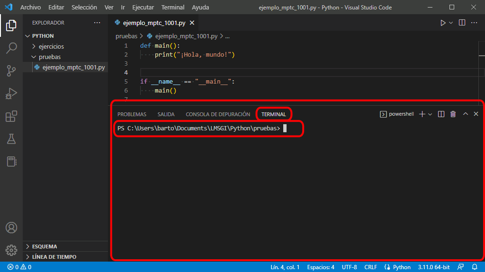
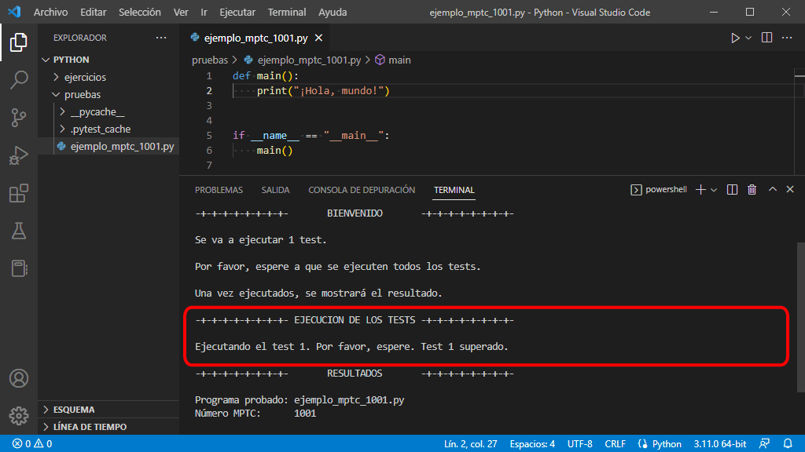
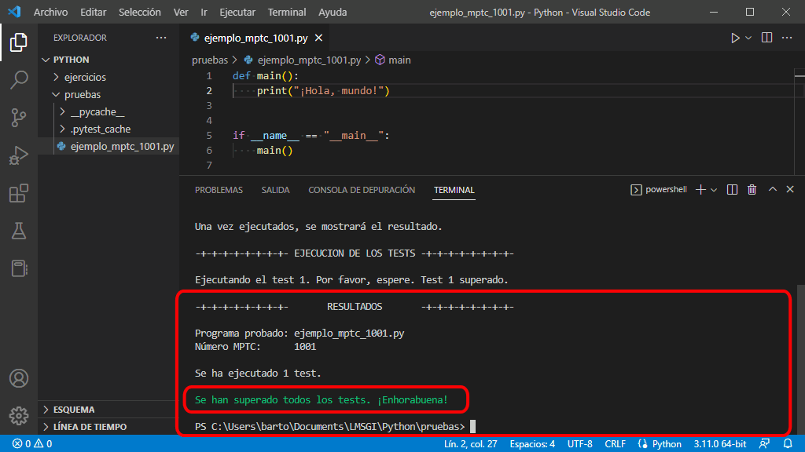

He empezado a crear Mclibre Python Testing en enero de 2019 y a lo largo del tercer trimestre del curso 2018/19 espero ir mejorando la herramienta, pero todavía tiene un carácter experimental.
Qué es Mclibre Python Testing
Mclibre Python Testing es una herramienta basada en PyTest pensada para ayudar a los alumnos a comprobar que han resuelto correctamente los ejercicios propuestos en este curso.
Mclibre Python Testing es software libre publicado bajo licencia AGPLv3+. El código fuente de esta herramienta se encuentra en GitHub y el programa se distribuye a través del Python Package Index (PyPI).
La herramienta tiene dos partes:
Un programa de servidor que genera los parámetros de pruebas para PyTest.
Un programa de cliente que solicita al servidor los parámetros de prueba para PyTest y que ejecuta PyTest con dichos parámetros y que muestra el resultado de las pruebas.
El alumno sólo necesita instalar el programa cliente. El programa cliente requiere las bibliotecas PyTest y Requests, que se deben instalar previamente, como se comenta en la lección Instalación de MPTC.
¿Cómo se utiliza Mclibre Python Testing Client?
En la lección Instalación de Mclibre Python Testing Client (MPTC) se comentan las diferentes opciones de instalación (como módulo de sistema o en entorno virtual) en diferentes sistemas operativos (Windows o Ubuntu).
Una vez instalado MPTC, su uso es sencillo. Los pasos a realizar serían los siguientes:
Elegir un ejercicio que incluya el identificador MPTC del ejercicio:
Los ejercicios para los que hay disponibles tests automáticos de MPTC se pueden identificar por el cuadro situado en la parte superior derecha del enunciado, como en el ejemplo siguiente:
Ejemplo de ejercicio - 1
Escriba un programa que salude al mundo.
¡Hola, mundo!
El número del cuadro indica el identificador del ejercicio en MPTC. En el ejemplo anterior, el número sería 1001.
Escribir el programa:
Escriba el programa que resuelve el ejercicio, siguiendo la plantilla de la lección Programa básico. Este punto es muy importante, ya que sólo se pueden validar los programas que siguen esta plantilla.
El programa correspondiente al ejemplo anterior podría ser el siguiente:
def main():
print("¡Hola, mundo!")
if __name__ == "__main__":
main()
Abrir una ventana de terminal en el directorio que contiene el programa.
Este punto es muy importante, ya que sólo se pueden validar los programas desde el directorio que contiene el programa.
Comprobar el funcionamiento del programa manualmente:
Compruebe que el programa funciona correctamente ejecutando el programa (escriba la orden python nombre_del_programa.py, donde nombre_del_programa.py es el nombre del programa) y comparando el resultado con el enunciado.
python p_1001.py
¡Hola, mundo!
Comprobar el funcionamiento del programa con MPTC
En el terminal, escriba la orden mptc nombre_del_programa.py identificador_mptc, donde nombre_del_programa.py es el nombre del programa e identificador_mptc es el identificador MPTC del ejercicio:
mptc p_1001.py 1001
En el terminal, MPTC muestra tres grupos de mensajes:
En el primer grupo (WELCOME), MPTC informa del número de tests que se van a realizar.
En el segundo grupo (TESTS EXECUTION), MPTC informa del resultado de cada test a medida que se van ejecutando.
En el tercer grupo, MPTC (RESULTS), MPTC muestra un resumen del resultado final.
mptc p_1001.py 1001
-+-+-+-+-+-+-+-+- MCLIBRE PYTHON TESTING -+-+-+-+-+-+-+-+-
-+-+-+-+-+-+-+-+- WELCOME -+-+-+-+-+-+-+-+-
1 test will be executed.
Please, wait until all tests have been executed.
A final report will be shown after.
-+-+-+-+-+-+-+-+- TESTS EXECUTION -+-+-+-+-+-+-+-+-
Running test 1. Please wait.
Test 1 passed.
-+-+-+-+-+-+-+-+- MCLIBRE PYTHON TESTING -+-+-+-+-+-+-+-+-
-+-+-+-+-+-+-+-+- RESULTS -+-+-+-+-+-+-+-+-
Tested program: p_1001.py
MPTC number: 1001
1 test has been executed.
All tests have been passed. Congratulations!
Corregir en su caso los errores detectados
En caso de que falle alguno de los tests, MPTC muestra información sobre el error producido, que puede utilizarse para corregir el error.
Por ejemplo, si el programa probado hubiera sido el siguiente:
def main():
print("Hola, mundo")
if __name__ == "__main__":
main()
... en el terminal, MPTC hubiera mostrado el siguiente resultado, que nos indica que el mensaje mostrado por el programa no es exactamente igual al solicitado en el enunciado (en este caso, faltan los signos de exclamación):
mptc p_1001.py 1001
-+-+-+-+-+-+-+-+- MCLIBRE PYTHON TESTING -+-+-+-+-+-+-+-+-
-+-+-+-+-+-+-+-+- WELCOME -+-+-+-+-+-+-+-+-
1 test will be executed.
Please, wait until all tests have been executed.
A final report will be shown after.
-+-+-+-+-+-+-+-+- TESTS EXECUTION -+-+-+-+-+-+-+-+-
Running test 1. Please wait.
Test 1 failed.
-+-+-+-+-+-+-+-+- MCLIBRE PYTHON TESTING -+-+-+-+-+-+-+-+-
-+-+-+-+-+-+-+-+- RESULTS -+-+-+-+-+-+-+-+-
Tested program: p_1001.py
MPTC number: 1001
1 test has been executed.
0 test has been passed.
1 test has been failed.
Failed test:
Expected result: "¡Hola, mundo!"
Obtained result: "Hola, mundo"
Cuando se invoca Mclibre Python Testing Client (MPTC) realiza las siguientes operaciones:
MPTC solicita al programa de servidor las pruebas a realizar. El servidor envía un número variable de pruebas. Cada prueba contiene:
unos valores de entrada (los que escribiría el usuario)
unos valores aleatorios (en caso de que el programa genere valores aleatorios)
los valores de salida que debería mostrar el programa para los valores de entrada o aleatorios anteriores.
MPTC ejecuta el programa del alumno tantas veces como pruebas se han recibido del servidor.
En cada ejecución, MPTC suplanta al usuario y proporciona al programa los valores de entrada enviados por el servidor. MPTC también suplanta partes del programa, como por ejemplo cuando se generan valores aleatorios. MPTC recoge la salida del programa..
MPTC compara la salida del programa con los valores esperados enviados por el servidor. Si coinciden exactamente la prueba se considera superada. Si hay cualquier diferencia la prueba se considera fallada. La diferencia puede ser importante (mensajes completamente distintos a los esperados, resultados numéricos incorrectos, etc.) o poco importante (erratas en algún mensaje como acentos, puntuación, espacios en blanco, mayúsculas, minúsculas, etc.),
Finalmente, MPTC muestra un resumen del resultado de las pruebas: cuántas pruebas se han realizado, cuántas se han superado y cuántas han fallado. En el caso de las pruebas falladas, MPTC muestra los valores de entrada y aleatorios utilizados en la prueba y los valores de salida que no coinciden con los esperados. Si la diferencia que ha provocado el fracaso de la prueba es poco importante, el alumno puede corregir fácilmente el programa comparando el valor esperado con el obtenido. Si la diferencia es más importante, el alumno puede corregir el programa ayudándose de los valores de entrada que han provocado el fallo.
Cómo utilizar MPTC en Visual Studio Code
Los pasos para utilizar Mclibre Python Testing Client en Visual Studio Code son los siguientes:
Elegir un ejercicio que incluya el identificador MPTC del ejercicio:
Los ejercicios para los que hay disponibles tests automáticos de MPTC se pueden identificar por el cuadro situado en la parte superior derecha del enunciado, como en el ejemplo siguiente:
Ejemplo de ejercicio - 1
Escriba un programa que salude al mundo.
¡Hola, mundo!
El número del cuadro indica el identificador del ejercicio en MPTC. En el ejemplo anterior, el número sería 1001.
Escribir el programa:
Escriba el programa que resuelve el ejercicio, siguiendo la plantilla de la lección Programa básico.
El programa correspondiente al ejemplo anterior podría ser el siguiente:
def main():
print("¡Hola, mundo!")
if __name__ == "__main__":
main()
Abrir una ventana de terminal en el directorio que contiene el programa:
Para ello, haga clic derecho sobre el directorio y elija la opción "Abrir en termninal":
Se abrirá una ventana de terminal en el directorio:

Comprobar el funcionamiento del programa manualmente:
Compruebe que el programa funciona correctamente ejecutando el programa (escriba la orden python nombre_del_programa.py, donde nombre_del_programa.py es el nombre del programa) y comparando el resultado con el enunciado.
Comprobar el funcionamiento del programa con MPTC
En el terminal, escriba la orden mptc nombre_del_programa.py identificador_mptc, donde nombre_del_programa.py es el nombre del programa e identificador_mptc es el identificador MPTC del ejercicio:
En el terminal, MPTC muestra tres grupos de mensajes. En el primer grupo informa del número de tests que se van a realizar.
En el segundo grupo, MPTC muestra la salida generada por pytest. Los mensajes de éxito se muestran en verde y los mensajes de fallo se muestran en rojo.

En el tercer grupo, MPTC muestra el resultado de la prueba.

Detalles a tener en cuenta
Si el primer argumento no es únicamente el nombre del fichero, MPTC no ejecuta los tests
Al llamar a MPTC, el primer argumento debe ser el nombre del fichero que contiene el programa. No pueden usarse ni caminos relativos ni absolutos. Si se utilizan caminos absolutos o relativos, se mostrará un mensaje de error, como en el ejemplo siguiente:
PS C:\Users\Barto\Documents\LMSGI Barto\Python\>mptc pruebas\ejemplo_mptc_1000.py 1000
Error: Relative or absolute paths [pruebas\ejemplo_mptc_1000.py] are not allowed.
Please, execute MPTC from the directory where your program is located.